変換群
「変換群」は、Cinderella.2で現在利用できる最も高度なオブジェクトの一つです。変換群は変換の集合です。変換群は任意の幾何的要素に適用することができます。幾何的要素は、変換群のそれぞれの変換によって反復的に写されます。変換群にはいくつかの応用と構造的な特徴があります。いくつかの具体的な例でそれを示しましょう。シンデレラの「変換群」は、数学的な「変換群」の概念とは異なることにも言及しておきます。主な２つの違いは、シンデレラの変換群はそれ自体にはかならずしも逆変換を含まないことと、かなりの数ではあるけれども有限回の繰り返しだけが実行されることです。
変換群の作成
最初に、スクリーン上に簡単な植物のようなものを生み出す変換群を造る方法を説明します。そのためには、３つの点
A,
B ,
C を置き、２つの 相似変換
A->B;
C->C と
A->A;
C->Bを作ります。動かすモードで、シフトキーを押しながらこの２つの相似変換のボタンをクリックして選択し、 モードメニューから 特別->変換群 を選びますと、変換群のボタンができます。
ひとつの点
D を加え、それを選択して変換群のボタンを押すと、次のような図形ができます。
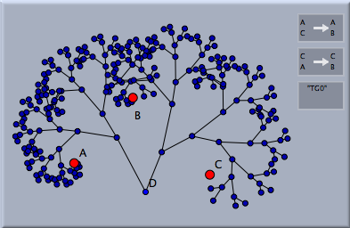 |
| １つの点の簡単な変換群による表示 |
この図形は、点Ｄに２つの変換を適用することによって作られます。それから、この２つの変換は作られた点にさらに適用されます。この手順は繰り返しの回数が規定に達するか要素の個数が規定に達するまで繰り返されます。これらの回数-パラメータは変換群のインスペクタでコントロールできます。
インスペクタでコントロールできるパラメータはすべての写された点に初期設定として適用されます。それらを変更しても、写された点は変更されません。すでに写された点のパラメータは、写された図形のどれかをクリックすると全体が選ばれるので、それからインスペクタで個々の設定を変えることができます。
写された点の詳細については、インスペクタの次の部分でコントロールできます。
生成される点を線分で結ぶと、変換群で点が作られていく様子を木構造として表示することができます。この「枝」をつくるかどうかは、インスペクタの「点を結ぶ」で切り替えることができます。生成された木の「葉」だけを描くこともできます。次の表はそれらの４通りの組み合わせを示します。
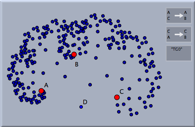 |
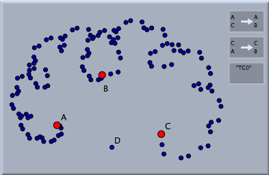 |
|
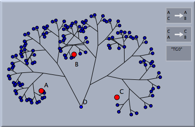 |
| すべての点を表示 |
「葉」だけを表示 |
写された要素が点の場合は単につなげられるだけです。次の図は、円が付け加えられた場合のものです。
変換群と反復関数系
変換群は 反復関数系と密接な関係があります。変換群を選択しておいてモードメニューの「特別->反復関数系」を選びます。次の図は、ピタゴラス木に相当する効果を示します。左の図は反復関数系によるものを示します。反復関数系はすべての集積点に対応します。
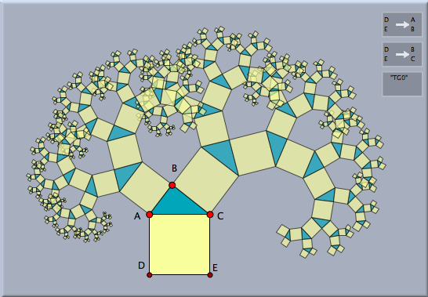 | |
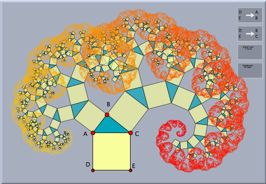 |
| ピタゴラス木と | |
その反復関数系 |
依存関係と変換群
ここまでの例で示された変換群は、制御する点の座標が一般的なものであれば、数学的感覚は要しないものでした。これは、このような一般的な場合には、どんなに繰り返しをしても同じ変換結果が２度は起こらないということです。しかし、変換を定義しているパラメータが特別な位置にある場合は、同じ変換を引き起こすいくつかの方法があるかもしれません。
たとえば、単純な鏡映の場合です。もし鏡映
R を２回適用すると自分自身に写ります。たとえば、
R と
R³ は同一の変換です。前述したように、単純な変換の組み合わせの中に鏡映が含まれている場合は、多くの恒等変換が作られます。これは計算機の能力とメモリに対して無駄です。幸いなことに、シンデレラには以前に生成された変換かどうかを判断する自動証明機能があります。 この特徴はインスペクタで 自動証明を使う をチェックすると使えます。
非常に簡単な例でそれを示しましょう。異なる平行移動
P と
Q を考えます。平行移動は互いに往復するので
P のあとに
Q を実行するのと
Q のあとに
P を実行するのが同じ効果になります。次の図は、自動証明機能を使った場合とそうでない場合を示します。
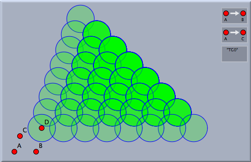 | |
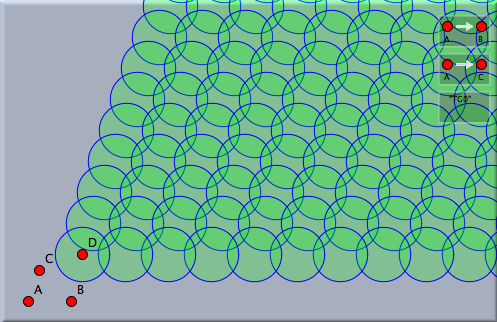 |
| 自動証明機能を使わない場合 | |
自動証明機能を使った場合 |
左が自動証明機能を使わない場合です。透明度20%の円が、２つの平行移動で作られた変換群によって写されます。異なる円ができていくように思われるかもしれません。しかし状況は違います。多くの円が重なっているのが、不透明度からわかるでしょう。自動証明機能を使うと右の図が得られます。重なっていた多くの円が別なものとして表示されています。自動証明機能によって無駄な繰り返しが除外されたのです。
装飾的な変換群
シンデレラ２の特徴として、平面装飾群(あるいは結晶群)について研究すると面白いです。その例を少し挙げましょう。最初に、 90°, 45° , 45°の３つの内角の三角形に配置された鏡を考えます。これら３つの鏡映の変換群は万華鏡のようなものを作り出します。この鏡映群を任意のオブジェクトに適用すると、平面上に素敵な対称形の絵を作成します。
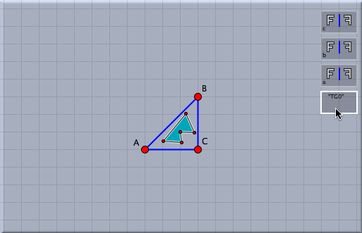 | |
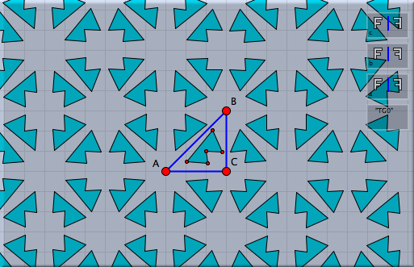 |
| 鏡映群を作って | |
適用する |
第２の例として、正六角形を回転して得られる結晶群を考えます。まず
多角形 モードを用いて正六角形を描きます。それから、相似変換 を用いて、中心周りに 60° 、２つの隣り合う頂点を中心に 120°の回転を定義します。これらの変換から
変換群を作り、任意のオブジェクトに適用して装飾的な模様を作ることができます。
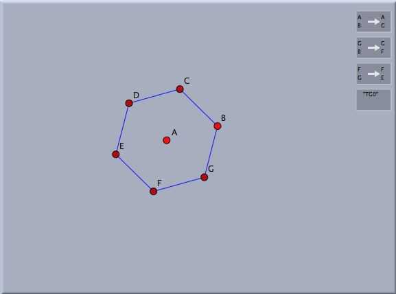 | |
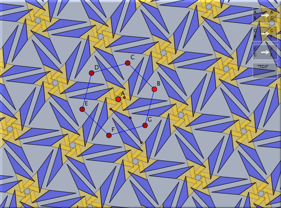 |
| 回転群を作り | |
適用する |
生成の順序
自動証明機能を適用した鏡映群の過程を研究するのは興味があります。一般に、鏡映群をちょうど１回ずつ適用していくと木構造のものができます。次の図は、２つの異なる鏡映群の様子を示します。変換群の初期設定を、およそ３００の要素にして、自動証明機能を使います。「点を結ぶ」で写された点は、ちょうど１回の変換で異なる２点を結ぶという初期設定が用いられます。点の木は、変換群で点が写されていく順序を表します。異なる鏡の位置によって、まったく違う木が構成される様子を観察してください。
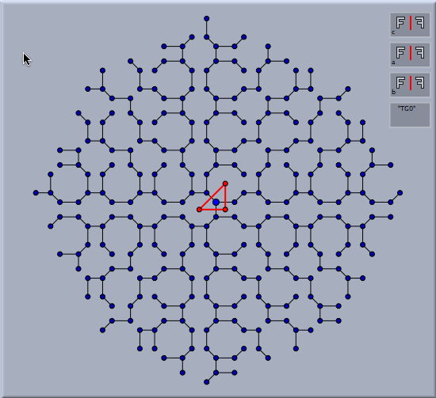 | |
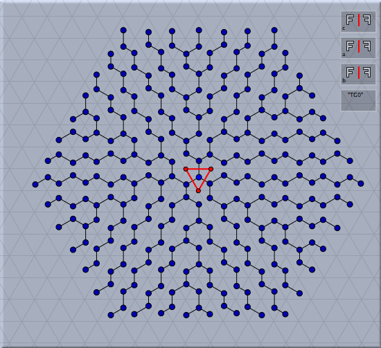 |
| (90度,45度,45度) の三角形による変換 | |
(60度,60度,60度) の三角形による変換 |
双曲変換群
双曲幾何学において、特に面白い変換群を観察することができます。それは、通常の結晶群の一般化です。それらの興味深い対称形ができる主な理由は、双曲幾何学においては正多角形の内角が小さいものが存在するということです。たとえば、内角が90° vの正多角形が存在します。これらの五角形のうち４つは双曲線のコーナーにちょうど合います。したがって、双曲面は直角の頂点からなる正五角形で敷き詰めることができます。そのような敷き詰め方を示しましょう。
まず、直角の頂点からなる正五角形が必要です。そのために、双曲幾何学 （
幾何学参照) に切り替えて、双曲表示 (
表示画面参照)にします。つぎに正五角形を描かなくてはなりません。これは多角形->正五角形 モードを使えばできます。五角形の大きさを変えるといくつの多角形がコーナーの周り合うかを示すにスナップ値が現れます。（
多角形参照) スナップ値が 4 のところで止めると (図.1) 直角の正五角形が得られます。
回転 ２直線 モードを選ぶと正五角形の２つの頂点周りの 90° の回転ができます。 (図.2 と 図.３)。
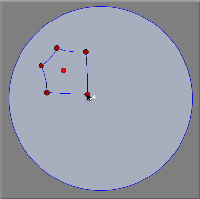 | |
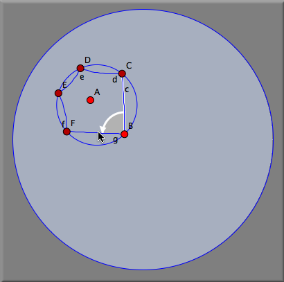 | |
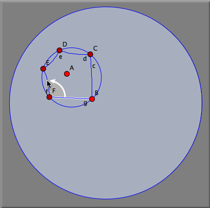 | |
| 図 1 | |
図 2 | |
図 3 |
これら２つの変換から変換群を作り、すべての線分を写すと空間充填ができます。
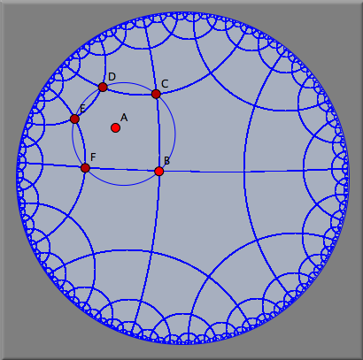 |
| 正五角形による双曲空間充填 |
次の図は、小さな三角形にこの双曲群を適用した結果を示します。図形は回転的対称性だけから構成されますが鏡映ではないことを観察してください。この図形のために繰り返しの深さはかなり上げてあります。
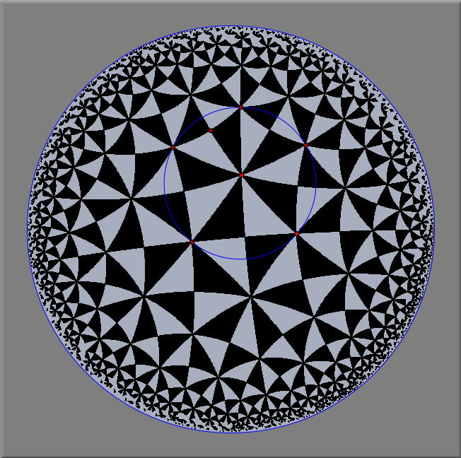 |
| 正五角形による双曲空間充填 |
注意
繰り返しの深さを大きくした変換群は、非常に多くの時間と記憶領域を必要とするかもしれません。ですから、描画がかなり遅くなるでしょう。もしかすると、メモリオーバーを引き起こすかもしれません。
こちらも参照してください